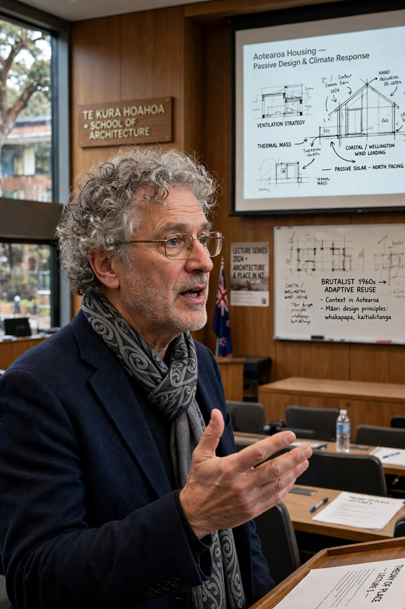

From Wikipedia, the free encyclopedia
| Mark Wigley | |
 | |
| Born | 1956, New Zealand |
|---|---|
| Nationality | New Zealand |
| Alma mater | University of Auckland |
| Occupation | Architectural theorist, professor, curator |
Mark Antony Wigley (born 1956) is a New Zealand-born architectural historian, theorist and curator based in New York City, known for his work on deconstructivism and his tenure as Dean of Columbia University's Graduate School of Architecture, Planning and Preservation (GSAPP).
Wigley studied architecture at the University of Auckland, where he completed a doctorate with a thesis on Jacques Derrida and architecture. He taught at Princeton University from 1987, serving as director of graduate studies in architecture, before moving to Columbia, where he was dean of GSAPP from 2004 to 2014. At Columbia he founded the Studio-X global network of research laboratories and the Arthur Ross Architecture Gallery.
With Philip Johnson, Wigley co-curated the Museum of Modern Art's landmark 1988 exhibition Deconstructivist Architecture, which brought architects including Zaha Hadid, Rem Koolhaas, Daniel Libeskind, Peter Eisenman, Bernard Tschumi, Frank Gehry and Coop Himmelb(l)au to international attention. His books include The Architecture of Deconstruction: Derrida's Haunt (1993), White Walls, Designer Dresses (1995), Constant's New Babylon: The Hyper-Architecture of Desire (1998), and, with Beatriz Colomina, Are We Human? Notes on an Archaeology of Design (2016), companion to their curation of the 3rd Istanbul Design Biennial.